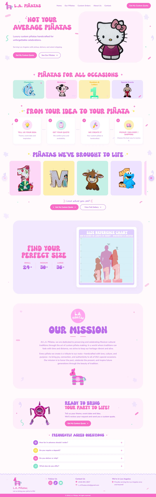

The goal
Present the craftsmanship and range of custom work while making it easy for customers to understand sizes, occasions, and next steps.
A colorful, mobile-friendly website that turns custom piñata inspiration into a clear quote-request journey.

Present the craftsmanship and range of custom work while making it easy for customers to understand sizes, occasions, and next steps.
The site leads visitors from featured designs through a simple four-step order process, size guidance, mission, and frequently asked questions.
A responsive storefront-style experience with clear calls to action and a direct path to a personalized quote.